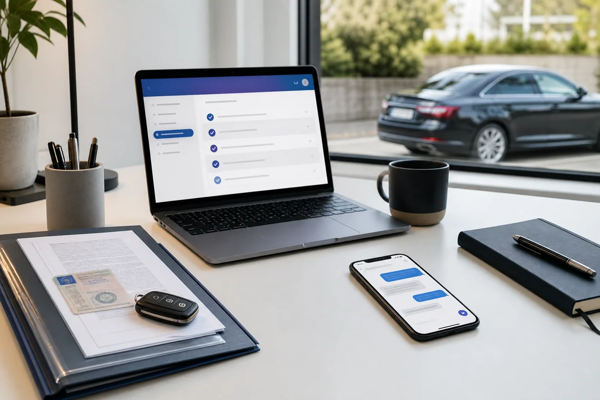

MPU Beratung Berlin
Berlin und Brandenburg: Online-Vorbereitung bei Alkohol, Cannabis, Drogen, Punkten und Straftaten.
Stadtseite öffnenMPU Beratung deutschlandweit online
MPUFIX begleitet dich online bei der MPU-Vorbereitung in Deutschland. Du bekommst einen klaren Plan für deinen Anlass, deine Nachweise und das psychologische Gespräch. Wir behaupten keine Fake-Standorte, sondern arbeiten transparent online.

Stadtübersicht
Wähle deine Stadt oder Region. Wenn deine Stadt nicht dabei ist, kannst du trotzdem online starten, denn die Beratung funktioniert deutschlandweit.
Berlin und Brandenburg: Online-Vorbereitung bei Alkohol, Cannabis, Drogen, Punkten und Straftaten.
Stadtseite öffnenHamburg und Norddeutschland: Online-Vorbereitung bei Alkohol, Cannabis, Drogen, Punkten und Straftaten.
Stadtseite öffnenMünchen und Bayern: Online-Vorbereitung bei Alkohol, Cannabis, Drogen, Punkten und Straftaten.
Stadtseite öffnenKöln und Rheinland: Online-Vorbereitung bei Alkohol, Cannabis, Drogen, Punkten und Straftaten.
Stadtseite öffnenFrankfurt, Rhein-Main und Hessen: Online-Vorbereitung bei Alkohol, Cannabis, Drogen, Punkten und Straftaten.
Stadtseite öffnenStuttgart und Baden-Württemberg: Online-Vorbereitung bei Alkohol, Cannabis, Drogen, Punkten und Straftaten.
Stadtseite öffnenDüsseldorf und NRW: Online-Vorbereitung bei Alkohol, Cannabis, Drogen, Punkten und Straftaten.
Stadtseite öffnenDortmund und Ruhrgebiet: Online-Vorbereitung bei Alkohol, Cannabis, Drogen, Punkten und Straftaten.
Stadtseite öffnenEssen und Ruhrgebiet: Online-Vorbereitung bei Alkohol, Cannabis, Drogen, Punkten und Straftaten.
Stadtseite öffnenLeipzig und Sachsen: Online-Vorbereitung bei Alkohol, Cannabis, Drogen, Punkten und Straftaten.
Stadtseite öffnenBremen und Nordwesten: Online-Vorbereitung bei Alkohol, Cannabis, Drogen, Punkten und Straftaten.
Stadtseite öffnenDresden und Sachsen: Online-Vorbereitung bei Alkohol, Cannabis, Drogen, Punkten und Straftaten.
Stadtseite öffnenHannover und Niedersachsen: Online-Vorbereitung bei Alkohol, Cannabis, Drogen, Punkten und Straftaten.
Stadtseite öffnenNürnberg und Franken: Online-Vorbereitung bei Alkohol, Cannabis, Drogen, Punkten und Straftaten.
Stadtseite öffnenDuisburg und westliches Ruhrgebiet: Online-Vorbereitung bei Alkohol, Cannabis, Drogen, Punkten und Straftaten.
Stadtseite öffnenBochum und Ruhrgebiet: Online-Vorbereitung bei Alkohol, Cannabis, Drogen, Punkten und Straftaten.
Stadtseite öffnenWuppertal und Bergisches Land: Online-Vorbereitung bei Alkohol, Cannabis, Drogen, Punkten und Straftaten.
Stadtseite öffnenBielefeld und Ostwestfalen: Online-Vorbereitung bei Alkohol, Cannabis, Drogen, Punkten und Straftaten.
Stadtseite öffnenBonn und Rheinland: Online-Vorbereitung bei Alkohol, Cannabis, Drogen, Punkten und Straftaten.
Stadtseite öffnenMünsterland und NRW: Online-Vorbereitung bei Alkohol, Cannabis, Drogen, Punkten und Straftaten.
Stadtseite öffnenWarum diese Struktur
Diese Seiten sind keine künstlichen Massenkopien. Jede Stadtseite erklärt, wie die Online-Vorbereitung für diese Region funktioniert und verlinkt auf passende Ratgeber. So kann die Seite langfristig wachsen, ohne gegen Qualitätsrichtlinien zu arbeiten.
Menschen suchen häufig nach MPU Beratung plus Stadt. Die Seiten beantworten genau diese Frage, ohne einen lokalen Standort vorzutäuschen.
MPUFIX zeigt offen, dass die Beratung online läuft. Das ist glaubwürdiger als erfundene Adressen oder kopierte Stadttexte.
Jede Stadtseite führt zu Ratgeberseiten Über Ablauf, Kosten und Abstinenznachweise. Das hilft Nutzern und Suchmaschinen.
Später können echte Bewertungen, Fallgeschichten, Videos und regionale Kooperationen ergänzt werden.